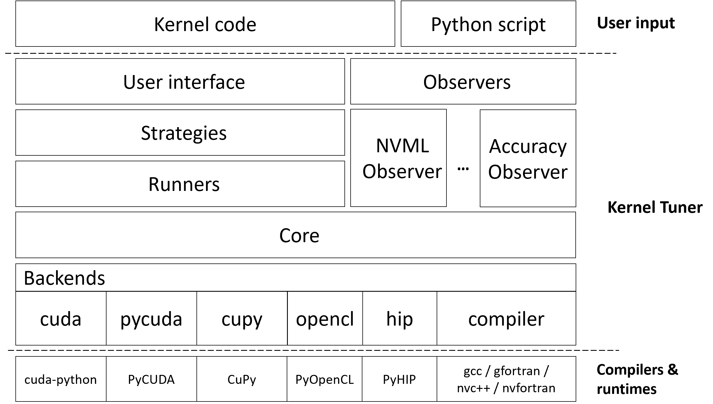

Design documentation¶
This section provides detailed information about the design and internals of the Kernel Tuner. This information is mostly relevant for developers.
The Kernel Tuner is designed to be extensible and support different search and execution strategies. The current architecture of the Kernel Tuner can be seen as:
{kind=link}
At the top we have the kernel code and the Python script that tunes it, which uses any of the main functions exposed in the user interface.
The strategies are responsible for iterating over and searching through
the search space. The default strategy is brute_force, which
iterates over all valid kernel configurations in the search space.
random_sample simply takes a random sample of the search space. More
advanced strategies are continuously being implemented and improved in
Kernel Tuner. The full list of supported strategies and how to use these
is explained in the API Documentation, see the options strategy and
strategy_options.
The runners are responsible for compiling and benchmarking the kernel configurations selected by the strategy. The sequential runner is currently the only supported runner, which does exactly what its name says. It compiles and benchmarks configurations using a single sequential Python process. Other runners are foreseen in future releases.
The runners are implemented on top of the core, which implements a
high-level Device Interface,
which wraps all the functionality for compiling and benchmarking
kernel configurations based on the low-level Device Function Interface.
Currently, we have
five different implementations of the device function interface, which
basically abstracts the different backends into a set of simple
functions such as ready_argument_list which allocates GPU memory and
moves data to the GPU, and functions like compile, benchmark, or
run_kernel. The functions in the core are basically the main
building blocks for implementing runners.
The observers are explained in Observers.
At the bottom, the backends are shown. PyCUDA, CuPy, cuda-python, PyOpenCL and PyHIP are for tuning either CUDA, OpenCL, or HIP kernels. The CompilerFunctions implementation can call any compiler, typically NVCC or GCC is used. There is limited support for tuning Fortran kernels. This backend was created not just to be able to tune C functions, but in particular to tune C functions that in turn launch GPU kernels.
The rest of this section contains the API documentation of the modules discussed above. For the documentation of the user API see the API Documentation.
Strategies¶
Strategies are explained in Optimization strategies.
Many of the strategies use helper functions that are collected in kernel_tuner.strategies.common.
kernel_tuner.strategies.common¶
- kernel_tuner.strategies.common.get_options(strategy_options, options)¶
Get the strategy-specific options or their defaults from user-supplied strategy_options.
- kernel_tuner.strategies.common.get_strategy_docstring(name, strategy_options)¶
Generate docstring for a ‘tune’ method of a strategy.
- kernel_tuner.strategies.common.make_strategy_options_doc(strategy_options)¶
Generate documentation for the supported strategy options and their defaults.
- kernel_tuner.strategies.common.scale_from_params(params, tune_params, eps)¶
Helper func to do the inverse of the ‘unscale’ function.
- kernel_tuner.strategies.common.setup_method_arguments(method, bounds)¶
Prepare method specific arguments.
- kernel_tuner.strategies.common.setup_method_options(method, tuning_options)¶
Prepare method specific options.
- kernel_tuner.strategies.common.snap_to_nearest_config(x, tune_params)¶
Helper func that for each param selects the closest actual value.
- kernel_tuner.strategies.common.unscale_and_snap_to_nearest(x, tune_params, eps)¶
Helper func that snaps a scaled variable to the nearest config.
Runners¶
kernel_tuner.runners.sequential.SequentialRunner¶
- class kernel_tuner.runners.sequential.SequentialRunner(kernel_source, kernel_options, device_options, iterations, observers)¶
SequentialRunner is used for tuning with a single process/thread.
- __init__(kernel_source, kernel_options, device_options, iterations, observers)¶
Instantiate the SequentialRunner.
- Parameters:
kernel_source (kernel_tuner.core.KernelSource) – The kernel source
kernel_options (kernel_tuner.interface.Options) – A dictionary with all options for the kernel.
device_options (kernel_tuner.interface.Options) – A dictionary with all options for the device on which the kernel should be tuned.
iterations (int) – The number of iterations used for benchmarking each kernel instance.
- run(parameter_space, tuning_options)¶
Iterate through the entire parameter space using a single Python process.
- Parameters:
parameter_space (iterable) – The parameter space as an iterable.
tuning_options (kernel_tuner.iterface.Options) – A dictionary with all options regarding the tuning process.
- Returns:
A list of dictionaries for executed kernel configurations and their execution times.
- Return type:
dict())
kernel_tuner.runners.sequential.SimulationRunner¶
- class kernel_tuner.runners.simulation.SimulationRunner(kernel_source, kernel_options, device_options, iterations, observers)¶
SimulationRunner is used for tuning with a single process/thread.
- __init__(kernel_source, kernel_options, device_options, iterations, observers)¶
Instantiate the SimulationRunner.
- Parameters:
kernel_source (kernel_tuner.core.KernelSource) – The kernel source
kernel_options (kernel_tuner.interface.Options) – A dictionary with all options for the kernel.
device_options (kernel_tuner.interface.Options) – A dictionary with all options for the device on which the kernel should be tuned.
iterations (int) – The number of iterations used for benchmarking each kernel instance.
- run(parameter_space, tuning_options)¶
Iterate through the entire parameter space using a single Python process.
- Parameters:
parameter_space (iterable) – The parameter space as an iterable.
tuning_options (kernel_tuner.iterface.Options) – A dictionary with all options regarding the tuning process.
- Returns:
A list of dictionaries for executed kernel configurations and their execution times.
- Return type:
dict()
Device Interfaces¶
kernel_tuner.core.DeviceInterface¶
- class kernel_tuner.core.DeviceInterface(kernel_source, device=0, platform=0, quiet=False, compiler=None, compiler_options=None, iterations=7, observers=None)¶
Class that offers a High-Level Device Interface to the rest of the Kernel Tuner
- __init__(kernel_source, device=0, platform=0, quiet=False, compiler=None, compiler_options=None, iterations=7, observers=None)¶
Instantiate the DeviceInterface, based on language in kernel source
- Parameters:
kernel_source (kernel_tuner.core.KernelSource) – The kernel sources
device (int) – CUDA/OpenCL device to use, in case you have multiple CUDA-capable GPUs or OpenCL devices you may use this to select one, 0 by default. Ignored if you are tuning host code by passing lang=”C”.
platform – OpenCL platform to use, in case you have multiple OpenCL platforms you may use this to select one, 0 by default. Ignored if not using OpenCL.
lang (string) – Specifies the language used for GPU kernels. Currently supported: “CUDA”, “OpenCL”, “HIP” or “C”
compiler_options (list of strings) – The compiler options to use when compiling kernels for this device.
iterations (int) – Number of iterations to be used when benchmarking using this device.
times (bool) – Return the execution time of all iterations.
- benchmark(func, gpu_args, instance, verbose, objective, skip_nvml_setting=False)¶
Benchmark the kernel instance.
- benchmark_continuous(func, gpu_args, threads, grid, result, duration)¶
Benchmark continuously for at least ‘duration’ seconds
- benchmark_default(func, gpu_args, threads, grid, result)¶
Benchmark one kernel execution at a time.
- check_kernel_output(func, gpu_args, instance, answer, atol, verify, verbose)¶
runs the kernel once and checks the result against answer
- compile_kernel(instance, verbose)¶
compile the kernel for this specific instance
- copy_constant_memory_args(cmem_args)¶
adds constant memory arguments to the most recently compiled module
adds shared memory arguments to the most recently compiled module
- copy_texture_memory_args(texmem_args)¶
adds texture memory arguments to the most recently compiled module
- create_kernel_instance(kernel_source, kernel_options, params, verbose)¶
create kernel instance from kernel source, parameters, problem size, grid divisors, and so on
- get_environment()¶
Return dictionary with information about the environment
- memcpy_dtoh(dest, src)¶
perform a device to host memory copy
- static preprocess_gpu_arguments(old_arguments, params)¶
Get a flat list of arguments based on the configuration given by params
- ready_argument_list(arguments)¶
ready argument list to be passed to the kernel, allocates gpu mem if necessary
- run_kernel(func, gpu_args, instance)¶
Run a compiled kernel instance on a device
- set_nvml_parameters(instance)¶
Set the NVML parameters. Avoids setting time leaking into benchmark time.
kernel_tuner.backends.pycuda.PyCudaFunctions¶
- class kernel_tuner.backends.pycuda.PyCudaFunctions(device=0, iterations=7, compiler_options=None, observers=None)¶
Class that groups the CUDA functions on maintains state about the device.
- __init__(device=0, iterations=7, compiler_options=None, observers=None)¶
Instantiate PyCudaFunctions object used for interacting with the CUDA device.
Instantiating this object will inspect and store certain device properties at runtime, which are used during compilation and/or execution of kernels by the kernel tuner. It also maintains a reference to the most recently compiled source module for copying data to constant memory before kernel launch.
- Parameters:
device (int) – Number of CUDA device to use for this context
iterations (int) – Number of iterations used while benchmarking a kernel, 7 by default.
- compile(kernel_instance)¶
Call the CUDA compiler to compile the kernel, return the device function.
- Parameters:
kernel_name (string) – The name of the kernel to be compiled, used to lookup the function after compilation.
kernel_string (string) – The CUDA kernel code that contains the function kernel_name
- Returns:
An CUDA kernel that can be called directly.
- Return type:
pycuda.driver.Function
- copy_constant_memory_args(cmem_args)¶
Adds constant memory arguments to the most recently compiled module.
- Parameters:
cmem_args (dict( string: numpy.ndarray, ... )) – A dictionary containing the data to be passed to the device constant memory. The format to be used is as follows: A string key is used to name the constant memory symbol to which the value needs to be copied. Similar to regular arguments, these need to be numpy objects, such as numpy.ndarray or numpy.int32, and so on.
Add shared memory arguments to the kernel.
- copy_texture_memory_args(texmem_args)¶
Adds texture memory arguments to the most recently compiled module.
- Parameters:
texmem_args (dict) – A dictionary containing the data to be passed to the device texture memory. See tune_kernel().
- kernel_finished()¶
Returns True if the kernel has finished, False otherwise.
- memcpy_dtoh(dest, src)¶
Perform a device to host memory copy.
- Parameters:
dest (numpy.ndarray) – A numpy array in host memory to store the data
src (pycuda.driver.DeviceAllocation) – A GPU memory allocation unit
- memcpy_htod(dest, src)¶
Perform a host to device memory copy.
- Parameters:
dest (pycuda.driver.DeviceAllocation) – A GPU memory allocation unit
src (numpy.ndarray) – A numpy array in host memory to store the data
- memset(allocation, value, size)¶
Set the memory in allocation to the value in value.
- Parameters:
allocation (pycuda.driver.DeviceAllocation) – A GPU memory allocation unit
value (a single 8-bit unsigned int) – The value to set the memory to
size (int) – The size of to the allocation unit in bytes
- ready_argument_list(arguments)¶
Ready argument list to be passed to the kernel, allocates gpu mem.
- Parameters:
arguments (list(numpy objects)) – List of arguments to be passed to the kernel. The order should match the argument list on the CUDA kernel. Allowed values are numpy.ndarray, and/or numpy.int32, numpy.float32, and so on.
- Returns:
A list of arguments that can be passed to an CUDA kernel.
- Return type:
list( pycuda.driver.DeviceAllocation, numpy.int32, … )
- run_kernel(func, gpu_args, threads, grid, stream=None)¶
Runs the CUDA kernel passed as ‘func’.
- Parameters:
func (pycuda.driver.Function) – A PyCuda kernel compiled for this specific kernel configuration
gpu_args (list( pycuda.driver.DeviceAllocation, numpy.int32, ...)) – A list of arguments to the kernel, order should match the order in the code. Allowed values are either variables in global memory or single values passed by value.
threads (tuple(int, int, int)) – A tuple listing the number of threads in each dimension of the thread block
grid (tuple(int, int)) – A tuple listing the number of thread blocks in each dimension of the grid
- start_event()¶
Records the event that marks the start of a measurement.
- stop_event()¶
Records the event that marks the end of a measurement.
- synchronize()¶
Halts execution until device has finished its tasks.
kernel_tuner.backends.cupy.CupyFunctions¶
- class kernel_tuner.backends.cupy.CupyFunctions(device=0, iterations=7, compiler_options=None, observers=None)¶
Class that groups the Cupy functions on maintains state about the device.
- __init__(device=0, iterations=7, compiler_options=None, observers=None)¶
Instantiate CupyFunctions object used for interacting with the CUDA device.
Instantiating this object will inspect and store certain device properties at runtime, which are used during compilation and/or execution of kernels by the kernel tuner. It also maintains a reference to the most recently compiled source module for copying data to constant memory before kernel launch.
- Parameters:
device (int) – Number of CUDA device to use for this context
iterations (int) – Number of iterations used while benchmarking a kernel, 7 by default.
- compile(kernel_instance)¶
Call the CUDA compiler to compile the kernel, return the device function.
- Parameters:
kernel_name (string) – The name of the kernel to be compiled, used to lookup the function after compilation.
kernel_string (string) – The CUDA kernel code that contains the function kernel_name
- Returns:
An CUDA kernel that can be called directly.
- Return type:
cupy.RawKernel
- copy_constant_memory_args(cmem_args)¶
Adds constant memory arguments to the most recently compiled module.
- Parameters:
cmem_args (dict( string: numpy.ndarray, ... )) – A dictionary containing the data to be passed to the device constant memory. The format to be used is as follows: A string key is used to name the constant memory symbol to which the value needs to be copied. Similar to regular arguments, these need to be numpy objects, such as numpy.ndarray or numpy.int32, and so on.
Add shared memory arguments to the kernel.
- copy_texture_memory_args(texmem_args)¶
Adds texture memory arguments to the most recently compiled module.
- Parameters:
texmem_args (dict) – A dictionary containing the data to be passed to the device texture memory. See tune_kernel().
- kernel_finished()¶
Returns True if the kernel has finished, False otherwise.
- memcpy_dtoh(dest, src)¶
Perform a device to host memory copy.
- Parameters:
dest (numpy.ndarray) – A numpy array in host memory to store the data
src (cupy.ndarray) – A GPU memory allocation unit
- memcpy_htod(dest, src)¶
Perform a host to device memory copy.
- Parameters:
dest (cupy.ndarray) – A GPU memory allocation unit
src (numpy.ndarray) – A numpy array in host memory to store the data
- memset(allocation, value, size)¶
Set the memory in allocation to the value in value.
- Parameters:
allocation (cupy.ndarray) – A GPU memory allocation unit
value (a single 8-bit unsigned int) – The value to set the memory to
size (int) – The size of to the allocation unit in bytes
- ready_argument_list(arguments)¶
Ready argument list to be passed to the kernel, allocates gpu mem.
- Parameters:
arguments (list(numpy objects)) – List of arguments to be passed to the kernel. The order should match the argument list on the CUDA kernel. Allowed values are numpy.ndarray, and/or numpy.int32, numpy.float32, and so on.
- Returns:
A list of arguments that can be passed to an CUDA kernel.
- Return type:
list( cupy.ndarray, numpy.int32, … )
- run_kernel(func, gpu_args, threads, grid, stream=None)¶
Runs the CUDA kernel passed as ‘func’.
- Parameters:
func (cupy.RawKernel) – A cupy kernel compiled for this specific kernel configuration
gpu_args (list( cupy.ndarray, numpy.int32, ...)) – A list of arguments to the kernel, order should match the order in the code. Allowed values are either variables in global memory or single values passed by value.
threads (tuple(int, int, int)) – A tuple listing the number of threads in each dimension of the thread block
grid (tuple(int, int)) – A tuple listing the number of thread blocks in each dimension of the grid
- start_event()¶
Records the event that marks the start of a measurement.
- stop_event()¶
Records the event that marks the end of a measurement.
- synchronize()¶
Halts execution until device has finished its tasks.
kernel_tuner.backends.nvcuda.CudaFunctions¶
- class kernel_tuner.backends.nvcuda.CudaFunctions(device=0, iterations=7, compiler_options=None, observers=None)¶
Class that groups the Cuda functions on maintains state about the device.
- __init__(device=0, iterations=7, compiler_options=None, observers=None)¶
Instantiate CudaFunctions object used for interacting with the CUDA device.
Instantiating this object will inspect and store certain device properties at runtime, which are used during compilation and/or execution of kernels by the kernel tuner. It also maintains a reference to the most recently compiled source module for copying data to constant memory before kernel launch.
- Parameters:
device (int) – Number of CUDA device to use for this context
iterations (int) – Number of iterations used while benchmarking a kernel, 7 by default.
compiler_options – Compiler options for the CUDA runtime compiler
observers – List of Observer type objects
- compile(kernel_instance)¶
Call the CUDA compiler to compile the kernel, return the device function.
- Parameters:
kernel_name (string) – The name of the kernel to be compiled, used to lookup the function after compilation.
kernel_string (string) – The CUDA kernel code that contains the function kernel_name
- Returns:
A kernel that can be launched by the CUDA runtime
- Return type:
- copy_constant_memory_args(cmem_args)¶
Adds constant memory arguments to the most recently compiled module.
- Parameters:
cmem_args (dict( string: numpy.ndarray, ... )) – A dictionary containing the data to be passed to the device constant memory. The format to be used is as follows: A string key is used to name the constant memory symbol to which the value needs to be copied. Similar to regular arguments, these need to be numpy objects, such as numpy.ndarray or numpy.int32, and so on.
Add shared memory arguments to the kernel.
- copy_texture_memory_args(texmem_args)¶
Adds texture memory arguments to the most recently compiled module.
- Parameters:
texmem_args (dict) – A dictionary containing the data to be passed to the device texture memory. See tune_kernel().
- kernel_finished()¶
Returns True if the kernel has finished, False otherwise.
- static memcpy_dtoh(dest, src)¶
Perform a device to host memory copy.
- Parameters:
dest (numpy.ndarray) – A numpy array in host memory to store the data
src (cuda.CUdeviceptr) – A GPU memory allocation unit
- static memcpy_htod(dest, src)¶
Perform a host to device memory copy.
- Parameters:
dest (cuda.CUdeviceptr) – A GPU memory allocation unit
src (numpy.ndarray) – A numpy array in host memory to store the data
- static memset(allocation, value, size)¶
Set the memory in allocation to the value in value.
- Parameters:
allocation (cupy.ndarray) – A GPU memory allocation unit
value (a single 8-bit unsigned int) – The value to set the memory to
size (int) – The size of to the allocation unit in bytes
- ready_argument_list(arguments)¶
Ready argument list to be passed to the kernel, allocates gpu mem.
- Parameters:
arguments (list(numpy objects)) – List of arguments to be passed to the kernel. The order should match the argument list on the CUDA kernel. Allowed values are numpy.ndarray, and/or numpy.int32, numpy.float32, and so on.
- Returns:
A list of arguments that can be passed to an CUDA kernel.
- Return type:
list( pycuda.driver.DeviceAllocation, numpy.int32, … )
- run_kernel(func, gpu_args, threads, grid, stream=None)¶
Runs the CUDA kernel passed as ‘func’.
- Parameters:
func (cuda.CUfunction) – A CUDA kernel compiled for this specific kernel configuration
gpu_args (list( cupy.ndarray, numpy.int32, ...)) – A list of arguments to the kernel, order should match the order in the code. Allowed values are either variables in global memory or single values passed by value.
threads (tuple(int, int, int)) – A tuple listing the number of threads in each dimension of the thread block
grid (tuple(int, int)) – A tuple listing the number of thread blocks in each dimension of the grid
- start_event()¶
Records the event that marks the start of a measurement.
- stop_event()¶
Records the event that marks the end of a measurement.
- static synchronize()¶
Halts execution until device has finished its tasks.
kernel_tuner.backends.opencl.OpenCLFunctions¶
- class kernel_tuner.backends.opencl.OpenCLFunctions(device=0, platform=0, iterations=7, compiler_options=None, observers=None)¶
Class that groups the OpenCL functions on maintains some state about the device.
- __init__(device=0, platform=0, iterations=7, compiler_options=None, observers=None)¶
Creates OpenCL device context and reads device properties.
- Parameters:
device (int) – The ID of the OpenCL device to use for benchmarking
iterations (int) – The number of iterations to run the kernel during benchmarking, 7 by default.
- compile(kernel_instance)¶
Call the OpenCL compiler to compile the kernel, return the device function.
- Parameters:
kernel_name (string) – The name of the kernel to be compiled, used to lookup the function after compilation.
kernel_string (string) – The OpenCL kernel code that contains the function kernel_name
- Returns:
An OpenCL kernel that can be called directly.
- Return type:
pyopencl.Kernel
- copy_constant_memory_args(cmem_args)¶
This method must implement the allocation and copy of constant memory to the GPU.
This method must implement the dynamic allocation of shared memory on the GPU.
- copy_texture_memory_args(texmem_args)¶
This method must implement the allocation and copy of texture memory to the GPU.
- kernel_finished()¶
Returns True if the kernel has finished, False otherwise.
- memcpy_dtoh(dest, src)¶
Perform a device to host memory copy.
- Parameters:
dest (numpy.ndarray) – A numpy array in host memory to store the data
src (pyopencl.Buffer) – An OpenCL Buffer to copy data from
- memcpy_htod(dest, src)¶
Perform a host to device memory copy.
- Parameters:
dest (pyopencl.Buffer) – An OpenCL Buffer to copy data from
src (numpy.ndarray) – A numpy array in host memory to store the data
- memset(buffer, value, size)¶
Set the memory in allocation to the value in value.
- Parameters:
allocation (pyopencl.Buffer) – An OpenCL Buffer to fill
value (a single 32-bit int) – The value to set the memory to
size (int) – The size of to the allocation unit in bytes
- ready_argument_list(arguments)¶
Ready argument list to be passed to the kernel, allocates gpu mem.
- Parameters:
arguments (list(numpy objects)) – List of arguments to be passed to the kernel. The order should match the argument list on the OpenCL kernel. Allowed values are numpy.ndarray, and/or numpy.int32, numpy.float32, and so on.
- Returns:
A list of arguments that can be passed to an OpenCL kernel.
- Return type:
list( pyopencl.Buffer, numpy.int32, … )
- run_kernel(func, gpu_args, threads, grid)¶
Runs the OpenCL kernel passed as ‘func’.
- Parameters:
func (pyopencl.Kernel) – An OpenCL Kernel
gpu_args (list( pyopencl.Buffer, numpy.int32, ...)) – A list of arguments to the kernel, order should match the order in the code. Allowed values are either variables in global memory or single values passed by value.
threads (tuple(int, int, int)) – A tuple listing the number of work items in each dimension of the work group.
grid (tuple(int, int)) – A tuple listing the number of work groups in each dimension of the NDRange.
- start_event()¶
Records the event that marks the start of a measurement.
In OpenCL the event is created when the kernel is launched
- stop_event()¶
Records the event that marks the end of a measurement.
In OpenCL the event is created when the kernel is launched
- synchronize()¶
Halts execution until device has finished its tasks.
kernel_tuner.backends.compiler.CompilerFunctions¶
- class kernel_tuner.backends.compiler.CompilerFunctions(iterations=7, compiler_options=None, compiler=None, observers=None)¶
Class that groups the code for running and compiling C functions
- __init__(iterations=7, compiler_options=None, compiler=None, observers=None)¶
instantiate CFunctions object used for interacting with C code
- Parameters:
iterations (int) – Number of iterations used while benchmarking a kernel, 7 by default.
- cleanup_lib()¶
unload the previously loaded shared library
- compile(kernel_instance)¶
call the C compiler to compile the kernel, return the function
- Parameters:
kernel_instance (kernel_tuner.core.KernelInstance) – An object representing the specific instance of the tunable kernel in the parameter space.
- Returns:
An ctypes function that can be called directly.
- Return type:
ctypes._FuncPtr
- kernel_finished()¶
Returns True if the kernel has finished, False otherwise
C backend does not support asynchronous launches
- memcpy_dtoh(dest, src)¶
a simple memcpy copying from an Argument to a numpy array
- Parameters:
dest (np.ndarray or cupy.ndarray) – A numpy or cupy array to store the data
src (Argument) – An Argument for some memory allocation
- memcpy_htod(dest, src)¶
a simple memcpy copying from a numpy array to an Argument
- Parameters:
dest (Argument) – An Argument for some memory allocation
src (np.ndarray or cupy.ndarray) – A numpy or cupy array containing the source data
- memset(allocation, value, size)¶
set the memory in allocation to the value in value
- Parameters:
allocation (Argument) – An Argument for some memory allocation unit
value (a single 8-bit unsigned int) – The value to set the memory to
size (int) – The size of to the allocation unit in bytes
- ready_argument_list(arguments)¶
ready argument list to be passed to the C function
- Parameters:
arguments (list(numpy or cupy objects)) – List of arguments to be passed to the C function. The order should match the argument list on the C function. Allowed values are np.ndarray, cupy.ndarray, and/or np.int32, np.float32, and so on.
- Returns:
A list of arguments that can be passed to the C function.
- Return type:
list(Argument)
- run_kernel(func, c_args, threads, grid, stream=None)¶
runs the kernel once, returns whatever the kernel returns
- Parameters:
func (ctypes._FuncPtr) – A C function compiled for this specific configuration
c_args (list(Argument)) – A list of arguments to the function, order should match the order in the code. The list should be prepared using ready_argument_list().
threads (any) – Ignored, but left as argument for now to have the same interface as Backend.
grid (any) – Ignored, but left as argument for now to have the same interface as Backend.
stream – Ignored, but left as argument for now to have the same interface as Backend.
- Returns:
A robust average of values returned by the C function.
- Return type:
float
- start_event()¶
Records the event that marks the start of a measurement
C backend does not use events
- stop_event()¶
Records the event that marks the end of a measurement
C backend does not use events
- synchronize()¶
Halts execution until device has finished its tasks
C backend does not support asynchronous launches
kernel_tuner.backends.hip.HipFunctions¶
- class kernel_tuner.backends.hip.HipFunctions(device=0, iterations=7, compiler_options=None, observers=None)¶
Class that groups the HIP functions on maintains state about the device.
- __init__(device=0, iterations=7, compiler_options=None, observers=None)¶
Instantiate HipFunctions object used for interacting with the HIP device.
Instantiating this object will inspect and store certain device properties at runtime, which are used during compilation and/or execution of kernels by the kernel tuner. It also maintains a reference to the most recently compiled source module for copying data to constant memory before kernel launch.
- Parameters:
device (int) – Number of HIP device to use for this context
iterations (int) – Number of iterations used while benchmarking a kernel, 7 by default.
- compile(kernel_instance)¶
Call the HIP compiler to compile the kernel, return the function.
- Parameters:
kernel_instance (kernel_tuner.core.KernelInstance) – An object representing the specific instance of the tunable kernel in the parameter space.
- Returns:
An ctypes function that can be called directly.
- Return type:
ctypes._FuncPtr
- copy_constant_memory_args(cmem_args)¶
Adds constant memory arguments to the most recently compiled module.
- Parameters:
cmem_args (dict( string: numpy.ndarray, ... )) – A dictionary containing the data to be passed to the device constant memory. The format to be used is as follows: A string key is used to name the constant memory symbol to which the value needs to be copied. Similar to regular arguments, these need to be numpy objects, such as numpy.ndarray or numpy.int32, and so on.
Add shared memory arguments to the kernel.
- copy_texture_memory_args(texmem_args)¶
Copy texture memory arguments. Not yet implemented.
- kernel_finished()¶
Returns True if the kernel has finished, False otherwise.
- memcpy_dtoh(dest, src)¶
Perform a device to host memory copy.
- Parameters:
dest (numpy.ndarray) – A numpy array in host memory to store the data
src (ctypes ptr) – A GPU memory allocation unit
- memcpy_htod(dest, src)¶
Perform a host to device memory copy.
- Parameters:
dest (ctypes ptr) – A GPU memory allocation unit
src (numpy.ndarray) – A numpy array in host memory to store the data
- memset(allocation, value, size)¶
Set the memory in allocation to the value in value.
- Parameters:
allocation (ctypes ptr) – A GPU memory allocation unit
value (a single 8-bit unsigned int) – The value to set the memory to
size (int) – The size of to the allocation unit in bytes
- ready_argument_list(arguments)¶
Ready argument list to be passed to the HIP function.
- Parameters:
arguments (list(numpy objects)) – List of arguments to be passed to the HIP function. The order should match the argument list on the HIP function. Allowed values are np.ndarray, and/or np.int32, np.float32, and so on.
- Returns:
Ctypes structure of arguments to be passed to the HIP function.
- Return type:
ctypes structure
- run_kernel(func, gpu_args, threads, grid, stream=None)¶
Runs the HIP kernel passed as ‘func’.
- Parameters:
func (ctypes pionter) – A HIP kernel compiled for this specific kernel configuration
gpu_args (ctypes structure) – A ctypes structure of arguments to the kernel, order should match the order in the code. Allowed values are either variables in global memory or single values passed by value.
threads (tuple(int, int, int)) – A tuple listing the number of threads in each dimension of the thread block
grid (tuple(int, int, int)) – A tuple listing the number of thread blocks in each dimension of the grid
- start_event()¶
Records the event that marks the start of a measurement.
- stop_event()¶
Records the event that marks the end of a measurement.
- synchronize()¶
Halts execution until device has finished its tasks.
Util Functions¶
kernel_tuner.util¶
Module for kernel tuner utility functions.
- class kernel_tuner.util.CompilationFailedConfig¶
- class kernel_tuner.util.ErrorConfig¶
- class kernel_tuner.util.InvalidConfig¶
- class kernel_tuner.util.NpEncoder(*, skipkeys=False, ensure_ascii=True, check_circular=True, allow_nan=True, sort_keys=False, indent=None, separators=None, default=None)¶
Class we use for dumping Numpy objects to JSON.
- default(obj)¶
Implement this method in a subclass such that it returns a serializable object for
o, or calls the base implementation (to raise aTypeError).For example, to support arbitrary iterators, you could implement default like this:
def default(self, o): try: iterable = iter(o) except TypeError: pass else: return list(iterable) # Let the base class default method raise the TypeError return JSONEncoder.default(self, o)
- class kernel_tuner.util.RuntimeFailedConfig¶
- exception kernel_tuner.util.SkippableFailure¶
Exception used to raise when compiling or launching a kernel fails for a reason that can be expected.
- exception kernel_tuner.util.StopCriterionReached¶
Exception thrown when a stop criterion has been reached.
- kernel_tuner.util.check_argument_list(kernel_name, kernel_string, args)¶
Raise an exception if a kernel arguments do not match host arguments.
- kernel_tuner.util.check_argument_type(dtype, kernel_argument)¶
Check if the numpy.dtype matches the type used in the code.
- kernel_tuner.util.check_restriction(restrict, params: dict) bool¶
Check whether a configuration meets a search space restriction.
- kernel_tuner.util.check_restrictions(restrictions, params: dict, verbose: bool) bool¶
Check whether a configuration meets the search space restrictions.
- kernel_tuner.util.check_stop_criterion(to)¶
Checks if max_fevals is reached or time limit is exceeded.
- kernel_tuner.util.check_thread_block_dimensions(params, max_threads, block_size_names=None)¶
Check on maximum thread block dimensions.
- kernel_tuner.util.check_tune_params_list(tune_params, observers, simulation_mode=False)¶
Raise an exception if a tune parameter has a forbidden name.
- kernel_tuner.util.compile_restrictions(restrictions: list, tune_params: dict, monolithic=False, try_to_constraint=True) list[tuple[Union[str, constraint.constraints.Constraint, function], list[str]]]¶
Parses restrictions from a list of strings into a list of strings, Functions, or Constraints (if try_to_constraint) and parameters used, or a single Function if monolithic is true.
- kernel_tuner.util.config_valid(config, tuning_options, max_threads)¶
Combines restrictions and a check on the max thread block dimension to check config validity.
- kernel_tuner.util.convert_constraint_restriction(restrict: Constraint)¶
Convert the python-constraint to a function for backwards compatibility.
- kernel_tuner.util.correct_open_cache(cache, open_cache=True)¶
if cache file was not properly closed, pretend it was properly closed
- kernel_tuner.util.cuda_error_check(error)¶
Checking the status of CUDA calls using the NVIDIA cuda-python backend.
- kernel_tuner.util.delete_temp_file(filename)¶
Delete a temporary file, don’t complain if no longer exists.
- kernel_tuner.util.detect_language(kernel_string)¶
Attempt to detect language from the kernel_string.
- kernel_tuner.util.dump_cache(obj: str, tuning_options)¶
Dumps a string in the cache, this omits the several checks of store_cache() to speed up the process - with great power comes great responsibility!
- kernel_tuner.util.get_best_config(results, objective, objective_higher_is_better=False)¶
Returns the best configuration from a list of results according to some objective.
- kernel_tuner.util.get_config_string(params, keys=None, units=None)¶
Return a compact string representation of a measurement.
- kernel_tuner.util.get_grid_dimensions(current_problem_size, params, grid_div, block_size_names)¶
Compute grid dims based on problem sizes and listed grid divisors.
- kernel_tuner.util.get_instance_string(params)¶
Combine the parameters to a string mostly used for debug output use of dict is advised.
- kernel_tuner.util.get_kernel_string(kernel_source, params=None)¶
Retrieve the kernel source and return as a string.
This function processes the passed kernel_source argument, which could be a function, a string with a filename, or just a string with code already.
If kernel_source is a function, the function is called with instance parameters in ‘params’ as the only argument.
If kernel_source looks like filename, the file is read in, but if the file does not exist, it is assumed that the string is not a filename after all.
- Parameters:
kernel_source (string or callable) – One of the sources for the kernel, could be a function that generates the kernel code, a string containing a filename that points to the kernel source, or just a string that contains the code.
params – Dictionary containing the tunable parameters for this specific kernel instance, only needed when kernel_source is a generator.
- Returns:
A string containing the kernel code.
- Return type:
string
- kernel_tuner.util.get_problem_size(problem_size, params)¶
Compute current problem size.
- kernel_tuner.util.get_smem_args(smem_args, params)¶
Return a dict with kernel instance specific size.
- kernel_tuner.util.get_temp_filename(suffix=None)¶
Return a string in the form of temp_X, where X is a large integer.
- kernel_tuner.util.get_thread_block_dimensions(params, block_size_names=None)¶
Thread block size from tuning params, currently using convention.
- kernel_tuner.util.get_total_timings(results, env, overhead_time)¶
Sum all timings and put their totals in the env.
- kernel_tuner.util.looks_like_a_filename(kernel_source)¶
Attempt to detect whether source code or a filename was passed.
- kernel_tuner.util.normalize_verify_function(v)¶
Normalize a user-specified verify function.
The user-specified function has two required positional arguments (answer, result_host), and an optional keyword (or keyword-only) argument atol. We normalize it to always accept an atol keyword argument.
Undefined behaviour if the passed function does not match the required signatures.
- kernel_tuner.util.parse_restrictions(restrictions: list[str], tune_params: dict, monolithic=False, try_to_constraint=True) list[tuple[Union[constraint.constraints.Constraint, str], list[str]]]¶
Parses restrictions from a list of strings into compilable functions and constraints, or a single compilable function (if monolithic is True). Returns a list of tuples of (strings or constraints) and parameters.
- kernel_tuner.util.prepare_kernel_string(kernel_name, kernel_string, params, grid, threads, block_size_names, lang, defines)¶
Prepare kernel string for compilation.
Prepends the kernel with a series of C preprocessor defines specific to this kernel instance:
the thread block dimensions
the grid dimensions
tunable parameters
- Parameters:
kernel_name (string) – Name of the kernel.
kernel_string (string) – One of the source files of the kernel as a string containing code.
params (dict) – A dictionary containing the tunable parameters specific to this instance.
grid (tuple(x,y,z)) – A tuple with the grid dimensions for this specific instance.
threads (tuple(x,y,z)) – A tuple with the thread block dimensions for this specific instance.
block_size_names (tuple(string)) – A tuple with the names of the thread block dimensions used in the code. By default this is [“block_size_x”, …], but the user may supply different names if they prefer.
defines (dict or None) – A dict that describes the variables that should be defined as preprocessor macros. Each keys should be the variable names and each value is either a string or a function that returns a string. If None, each tunable parameter is defined as preprocessor macro instead.
- Returns:
A string containing the source code made specific to this kernel instance.
- Return type:
string
- kernel_tuner.util.print_config(config, tuning_options, runner)¶
Print the configuration string with tunable parameters and benchmark results.
- kernel_tuner.util.print_config_output(tune_params, params, quiet, metrics, units)¶
Print the configuration string with tunable parameters and benchmark results.
- kernel_tuner.util.process_cache(cache, kernel_options, tuning_options, runner)¶
Cache file for storing tuned configurations.
the cache file is stored using JSON and uses the following format:
{ device_name: "name of device" kernel_name: "name of kernel" problem_size: (int, int, int) tune_params_keys: list tune_params: cache: { "x1,x2,..xN": {"block_size_x": x1, ..., time=0.234342}, "y1,y2,..yN": {"block_size_x": y1, ..., time=0.134233}, } }
The last two closing brackets are not required, and everything should work as expected if these are missing. This is to allow to continue from an earlier (abruptly ended) tuning session.
- kernel_tuner.util.process_metrics(params, metrics)¶
Process user-defined metrics for derived benchmark results.
Metrics must be a dictionary to support composable metrics. The dictionary keys describe the name given to this user-defined metric and will be used as the key in the results dictionaries return by Kernel Tuner. The values describe how to calculate the user-defined metric, using either a string expression in which the tunable parameters and benchmark results can be used as variables, or as a function that accepts a dictionary as argument.
Example: metrics = dict() metrics[“x”] = “10000 / time” metrics[“x2”] = “x*x”
Note that the values in the metric dictionary can also be functions that accept params as argument.
Example: metrics = dict() metrics[“GFLOP/s”] = lambda p : 10000 / p[“time”]
- Parameters:
params (dict) – A dictionary with tunable parameters and benchmark results.
metrics (dict) – A dictionary with user-defined metrics that can be used to create derived benchmark results.
- Returns:
An updated params dictionary with the derived metrics inserted along with the benchmark results.
- Return type:
dict
- kernel_tuner.util.read_cache(cache, open_cache=True)¶
Read the cachefile into a dictionary, if open_cache=True prepare the cachefile for appending.
- kernel_tuner.util.read_file(filename)¶
Return the contents of the file named filename or None if file not found.
- kernel_tuner.util.replace_param_occurrences(string: str, params: dict)¶
Replace occurrences of the tuning params with their current value.
- kernel_tuner.util.setup_block_and_grid(problem_size, grid_div, params, block_size_names=None)¶
Compute problem size, thread block and grid dimensions for this kernel.
- kernel_tuner.util.store_cache(key, params, tuning_options)¶
Stores a new entry (key, params) to the cachefile.
- kernel_tuner.util.to_valid_nvrtc_gpu_arch_cc(compute_capability: str) str¶
Returns a valid Compute Capability for NVRTC –gpu-architecture=, as per https://docs.nvidia.com/cuda/nvrtc/index.html#group__options.
- kernel_tuner.util.write_file(filename, string)¶
Dump the contents of string to a file called filename.